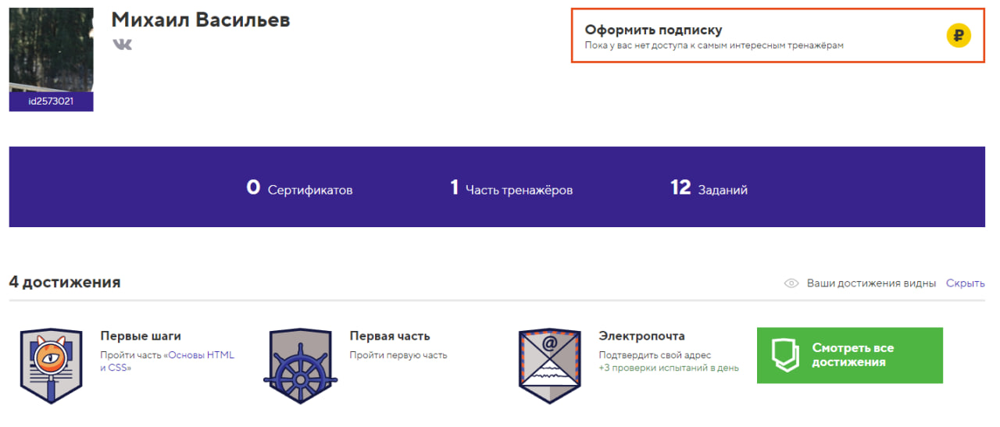
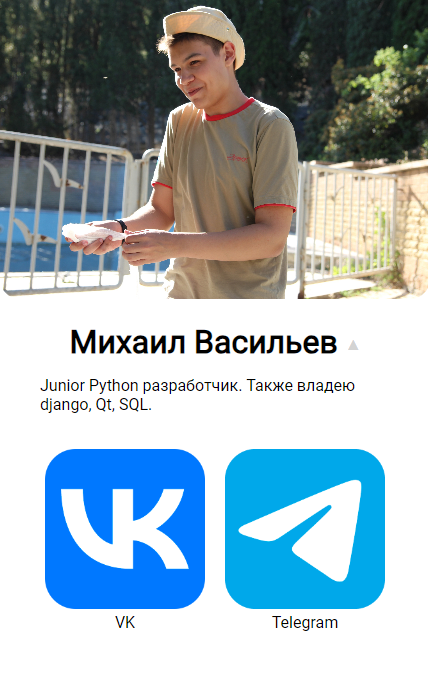

Министерство образования и науки Российской Федерации
Федеральное государственное бюджетное
образовательное учреждение высшего образования
Новосибирский государственный технический университет
Кафедра теоретической и прикладной информатики
Лабораторная работа №2
по дисциплине "Основы web-программирования"
Факультет: ПМИ
Группа: ПМИ-23
Студент: Васильев Михаил
Преподаватель: Цыгулин Алексей Александрович
Новосибирск, 2024
Введение:
Практическое задание: верстка
Цель: познакомиться со структурой HTML-документа, создать
страничку со своей презентацией, проявить творческий подход.
Задачи
- Для закрепления знаний о структуре и особенностях HTML-
документов выполнить задания на сайте htmlacademy.ru
- Сформировать страницу о себе с текстом, ссылками и фотографикой.
- Сформировать страницу с отчетом по работе в виде HTML-документа с сохранением всех атрибутов отчета:
титульным листом, текстом отчета с изображениями.
Ход работы:
- Задания на предложенной платформе выполнены.

- Страница о себе была создана.

- Сформирована страница с отчетом по лабораторной работе в виде html документа с сохранением всех
атрибутов отчета
Вывод:
В ходе работы был выполнены все задания, создан сайт с информацией о себе и сайт "Отчет". Были изучены основы HTML, CSS и JS.